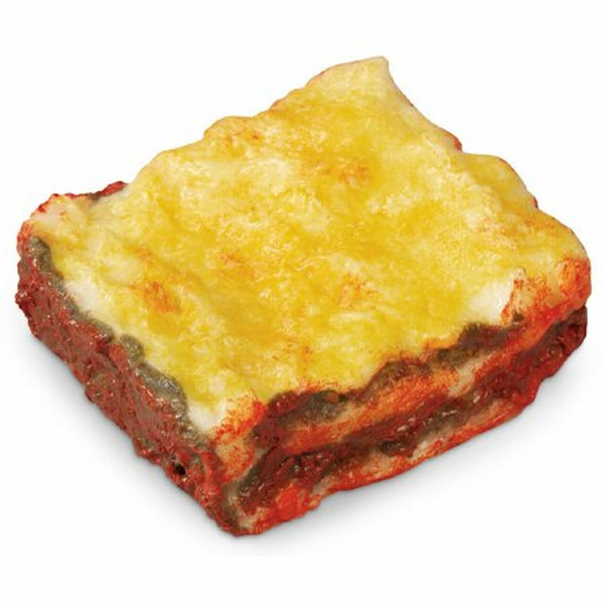
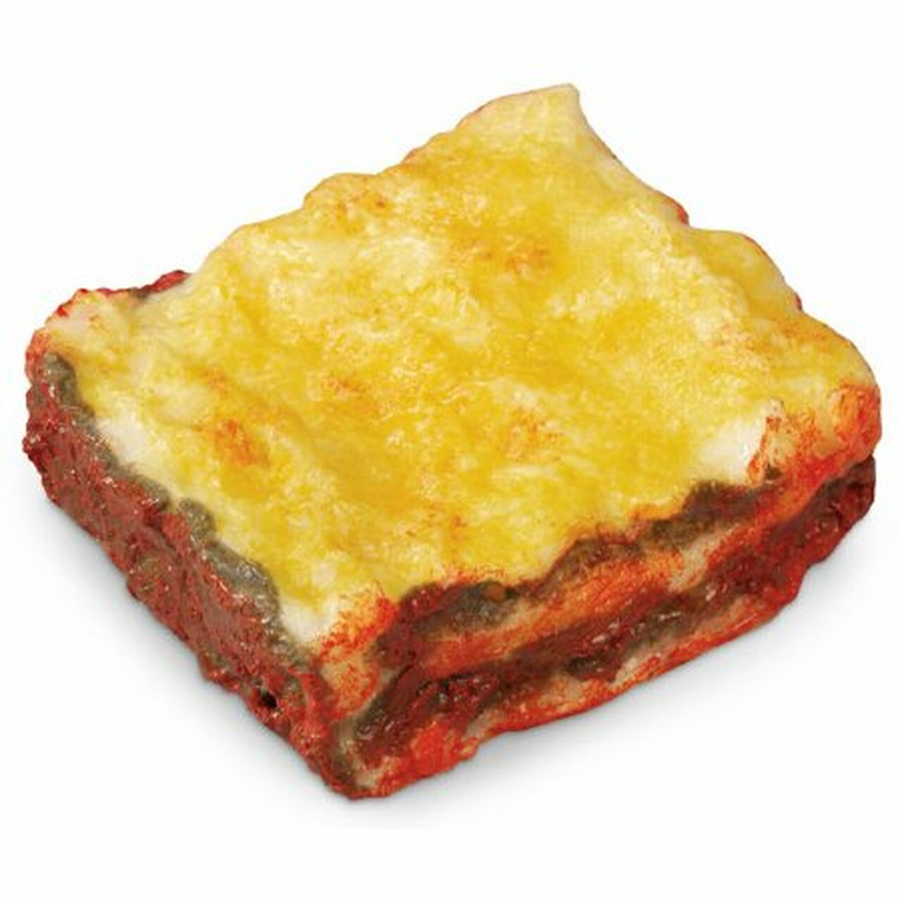

Odin Recipes
Lasagna Recipe
Garfield's own recipe
White Rice Recipe
Only reccommended for those who dabble in the wilder realms of flavor

Chicken Soup
Not to be confused with chicken noodle soup

Garfield's own recipe
Only reccommended for those who dabble in the wilder realms of flavor
Not to be confused with chicken noodle soup